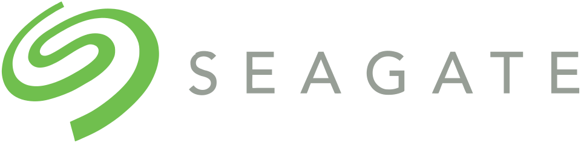

씨게이트 테크놀로지 Seagate Technology
씨게이트 테크놀로지(Seagate Technology)는 하드 디스크 드라이브와 솔리드 스테이트 드라이브를 개발·공급하는 미국의 데이터 저장 장치 기업이다.
최종 업데이트

씨게이트 테크놀로지는 어떤 브랜드인가
씨게이트는 개인용 컴퓨터와 기업용 시스템에 쓰이는 데이터 저장 장치를 개발하고 공급한다. 1980년 최초의 5.25인치 HDD인 5MB 용량의 ST-506을 출시하며 초기 시장을 개척했다.
1980년대에는 마이크로컴퓨터 시장의 주요 공급업체로 자리 잡았고, IBM XT 출시 이후 공급 물량이 늘며 성장했다. 이후 경쟁사와 여러 HDD 사업부를 인수해 제조 기술과 시장 점유율을 확대했다.
오늘날 Western Digital과 함께 HDD 시장을 독점하고 있으며, 2019년부터는 SSD 시장에도 진출했다.
씨게이트 테크놀로지는 어떻게 시작되고 성장했나
씨게이트는 1978년 11월 1일 Shugart Technology라는 사명으로 설립됐고 1979년 10월 영업을 시작했다. Alan Shugart 등 공동 창업자들은 5.25인치 HDD를 개발할 회사를 만들자는 제안에서 사업을 출발시켰다.
기존 회사와의 소송을 피하기 위해 Shugart의 이름에서 S, G, T를 따 현재의 사명으로 변경했다. IBM XT용 HDD의 대량 공급이 초기 성장을 이끌었으며, 1989년과 1996년, 2006년, 2011년에 경쟁사 또는 HDD 사업부를 인수하며 규모를 넓혔다.
씨게이트 테크놀로지의 브랜드 아이덴티티는 무엇인가
5.25인치 HDD의 초기 상용화를 주도하고 고속 스핀들 제품을 잇달아 도입했으며, 인수를 통해 HDD 시장의 주요 공급자로 성장한 점이 특징이다.
씨게이트 테크놀로지의 대표 제품과 서비스는 무엇인가
첫 제품인 ST-506은 1980년에 출시된 5MB 용량의 5.25인치 HDD로 MFM 인코딩 방식을 사용했다. 이듬해에는 10MB 용량의 ST-412를 출시했으며, 이를 바탕으로 IBM XT의 주요 OEM 공급업체가 됐다.
1991년에는 업계 최초로 7,200RPM 스핀들 속도를 적용한 HDD를 출시했고, 1996년과 2000년에는 각각 10,000RPM과 15,000RPM 제품을 선보였다. 1997년에는 최초의 파이버 채널 인터페이스 HDD를 도입했으며 2019년부터 SSD도 공급한다.
씨게이트 테크놀로지는 지금 어떤 상태인가
씨게이트는 2010년부터 아일랜드 더블린에 법적 본사를 두고 미국 캘리포니아주 프리몬트에 운영 본사를 두고 있다. 여러 차례의 인수를 통해 HDD 사업을 확대했으며 현재 Western Digital과 함께 HDD 시장을 독점한다.
2019년부터는 SSD 시장으로 사업 범위를 넓혔다.
씨게이트 테크놀로지 로고는 어떻게 변해왔나
자주 묻는 질문
씨게이트 테크놀로지는 어느 나라 브랜드인가요?
씨게이트 테크놀로지는 미국의 기술·전자 브랜드입니다.
씨게이트 테크놀로지는 언제 설립되었나요?
씨게이트 테크놀로지는 1979년 설립되었습니다.
씨게이트 테크놀로지의 브랜드 아이덴티티는 무엇인가요?
5.25인치 HDD의 초기 상용화를 주도하고 고속 스핀들 제품을 잇달아 도입했으며, 인수를 통해 HDD 시장의 주요 공급자로 성장한 점이 특징이다.
씨게이트 테크놀로지의 대표 제품은 무엇인가요?
첫 제품인 ST-506은 1980년에 출시된 5MB 용량의 5.25인치 HDD로 MFM 인코딩 방식을 사용했다.
씨게이트 테크놀로지는 현재 어떤 상태인가요?
씨게이트는 2010년부터 아일랜드 더블린에 법적 본사를 두고 미국 캘리포니아주 프리몬트에 운영 본사를 두고 있다.
씨게이트 테크놀로지의 창업자는 누구인가요?
씨게이트 테크놀로지의 창업자는 Alan Shugart입니다(위키데이터 기준).
씨게이트 테크놀로지의 본사는 어디에 있나요?
씨게이트 테크놀로지의 본사는 쿠퍼티노에 있습니다(위키데이터 기준).
출처와 검증
씨게이트 테크놀로지 관련 참고: 공식 웹사이트 · 위키데이터 Q705392 · 한국어 위키백과 · 영어 위키백과. 브랜드명은 한글과 원어를 함께 표기하되 데이터에 없는 표기는 만들지 않습니다. 기원 국가·설립연도는 검수된 정의문에서 확인된 값을 우선하고, 없을 때만 공식 웹사이트 URL이 일치하는 위키데이터 개체의 값을 씁니다. 위키데이터 값은 2026-09-12 기준입니다.